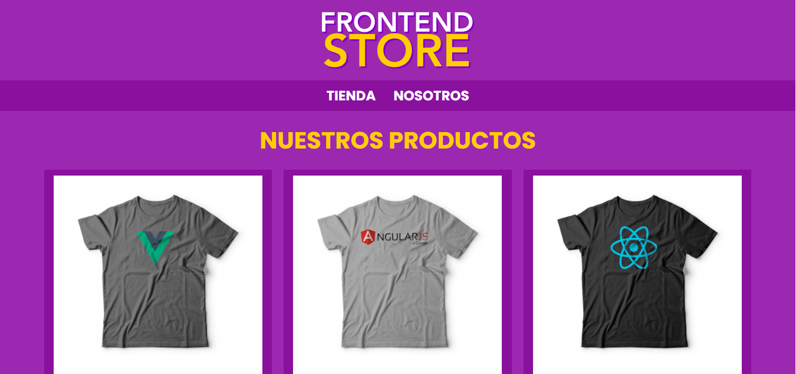

FlexBox
Permite maquetar nuestras páginas web de una manera mucho más fácil de lo que se hacía con la forma tradicional, en la que utilizábamos propiedades como float o position, entre otras.
Imagen 2. Página con CSS Grid
CSS Grid

El CSS grid se puede utilizar para lograr muchos diseños diferentes. También se destaca por permitir dividir una página en áreas o regiones principales y definir la relación en términos de tamaño, posición y capas entre partes de un control construido a partir de primitivas HTML.
Imagen 3. Página con CSS Grid